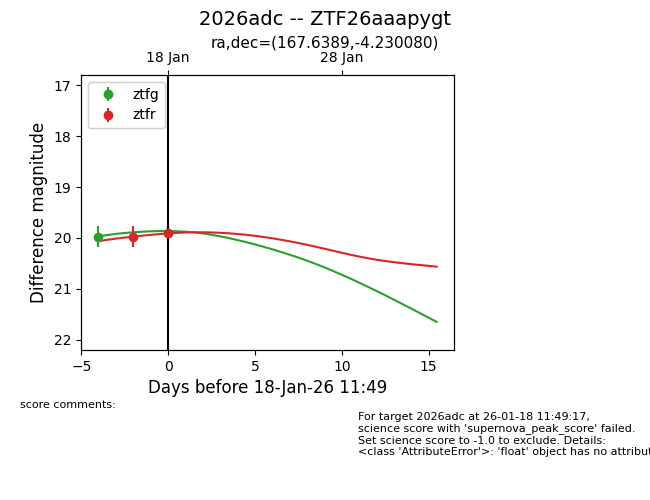
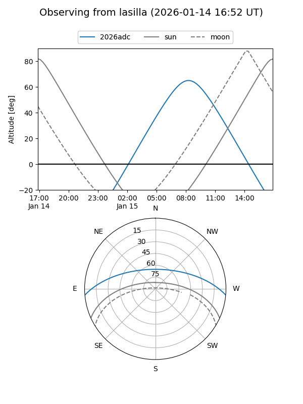
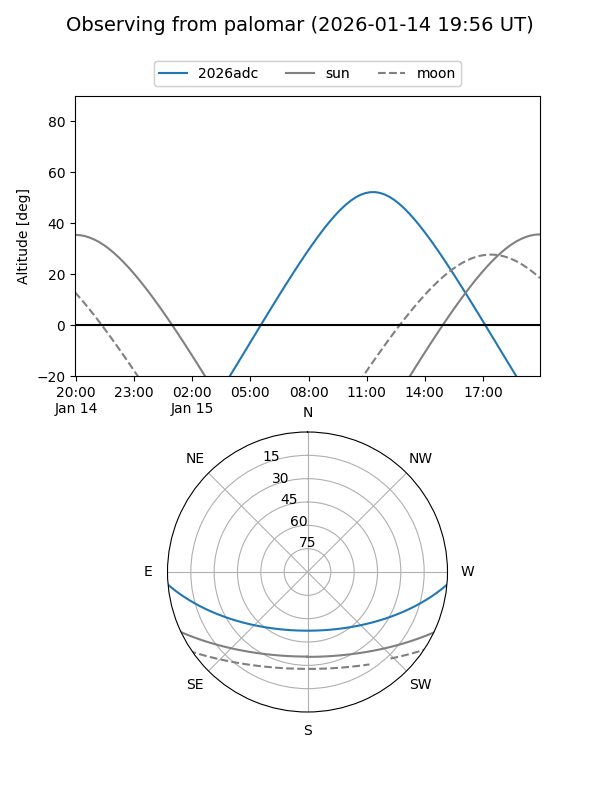
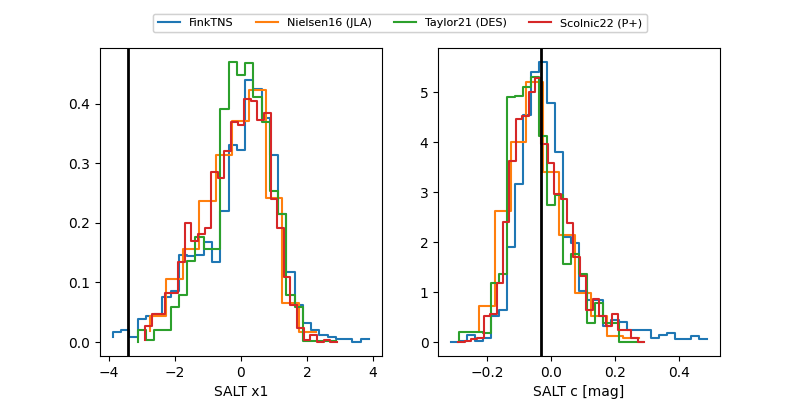

2026adc
Target 2026adc at 2026-01-16 11:35
Aliases and brokers:
FINK: link
Lasair: link
ALeRCE: link
TNS: link
YSE: link
alt names
ZTF26aaapygt (ztf,fink_ztf)
2026adc (tns,yse)
Coordinates:
equatorial (ra, dec) = 167.6389,-4.23008
equatorial (HMS+DMS) = 11:10:33.34,-04:13:48.29
galactic (l, b) = (261.2376,+50.29302)
Flags:
Photometry:
last ztfg=19.97, ztfr=19.97
1 ztfg, 1 ztfr detections
Lightcurve

Visibility


Additional plots
